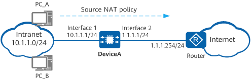

Example for Configuring NAPT for Intranet Users to Access the Internet
Networking Requirements
An enterprise has deployed DeviceA at the intranet border. A source NAT policy needs to be configured on DeviceA so that intranet users on the 10.1.1.0/24 network segment can access the Internet. In addition to the public IP address of the WAN interface on DeviceA, the enterprise has obtained six public IP addresses (1.1.1.10 to 1.1.1.15) from the ISP for address translation. Figure 1 shows the network diagram, in which the router is the access gateway provided by the ISP.

In this example, interfaces 1 and 2 represent 10GE 0/0/1 and 10GE 0/0/2, respectively.

Item |
Data |
Description |
|
|---|---|---|---|
10GE0/0/1 |
IP address: 10.1.1.1/24 |
Set the default gateway address on each intranet host to 10.1.1.1. |
|
10GE0/0/2 |
IP address: 1.1.1.1/24 |
1.1.1.1/24 is a public address provided by the ISP. |
|
Private network segment allowed to access the Internet |
10.1.1.0/24 |
- |
|
Post-NAT public addresses |
1.1.1.10 to 1.1.1.15 |
As private addresses far outnumber public addresses, one-to-one mapping cannot be implemented. To translate all private addresses into public addresses, use port translation. |
|
Routes |
Default route on DeviceA |
Destination address: 0.0.0.0 Next-hop address: 1.1.1.254 |
Configure a default route to the Internet on DeviceA, enabling it to forward traffic from the intranet to the ISP router. |
Configuration Roadmap
- Configure IP addresses for interfaces, enabling network connectivity. In addition, enable the NAT function on 10GE 0/0/2.
- Configure a NAT address pool.
- Configure a source NAT policy to enable source address translation for intranet users on a specified network segment to access the Internet.
- Configure a default route on DeviceA, enabling it to forward traffic sent from intranet users to the ISP router.
- Configure the default gateway address on each intranet host, enabling them to send traffic destined for the Internet to DeviceA.
Procedure
- Configure IP addresses for interfaces, enabling network connectivity. In addition, enable the NAT function on 10GE 0/0/2.
# Configure an IP address for 10GE 0/0/1.
<HUAWEI> system-view [HUAWEI] sysname DeviceA [DeviceA] interface 10ge 0/0/1 [DeviceA-10GE0/0/1] undo portswitch [DeviceA-10GE0/0/1] ip address 10.1.1.1 24 [DeviceA-10GE0/0/1] quit
# Configure an IP address for 10GE 0/0/2 and enable the NAT function on this interface.
[DeviceA] interface 10ge 0/0/2 [DeviceA-10GE0/0/2] undo portswitch [DeviceA-10GE0/0/2] ip address 1.1.1.1 24 [DeviceA-10GE0/0/2] nat enable [DeviceA-10GE0/0/2] quit
- Configure a NAT address pool.
[DeviceA] nat address-group addressgroup1 [DeviceA-address-group-addressgroup1] mode pat [DeviceA-address-group-addressgroup1] section 0 1.1.1.10 1.1.1.15 [DeviceA-address-group-addressgroup1] route enable [DeviceA-address-group-addressgroup1] quit
- Configure a source NAT policy to enable source address translation for intranet users on a specified network segment to access the Internet.
[DeviceA] nat-policy [DeviceA-policy-nat] rule name policy_nat1 [DeviceA-policy-nat-rule-policy_nat1] source-address 10.1.1.0 24 [DeviceA-policy-nat-rule-policy_nat1] action source-nat address-group addressgroup1 [DeviceA-policy-nat-rule-policy_nat1] quit [DeviceA-policy-nat] quit
- Configure a default route on DeviceA, enabling it to forward traffic sent from intranet users to the ISP router.
[DeviceA] ip route-static 0.0.0.0 0.0.0.0 1.1.1.254 - Configure the default gateway address on each intranet host, enabling them to send traffic destined for the Internet to DeviceA. The detailed configuration process is not provided here.
- If the addresses in the NAT address pool and the IP address of 10GE 0/0/2 are on different network segments, configure a static route to the addresses in the NAT address pool on the ISP router, with the next-hop address set to 1.1.1.1. The ISP router can then forward traffic returned by the Internet to DeviceA.
The post-NAT public addresses are not assigned to any interfaces. As a result, the ISP router is unable to use a routing protocol to discover routes to these public addresses. Therefore, contact the ISP network administrator to configure a static route to the addresses in the address pool on the ISP router.
Verifying the Configuration
- Verify that intranet PCs can access the Internet.
- Check for the session entries with the source addresses being the private addresses of intranet PCs. If such an entry is found and the post-NAT IP address is an IP address in the NAT address pool, the NAT policy has been configured successfully.
<DeviceA> display session all verbose Session Table Information: Protocol : 6(TCP) SrcAddr Port Vpn : 10.1.1.3 2474 DestAddr Port Vpn : 3.3.3.3 80 Time To Live : 60s NAT Info New SrcAddr : 1.1.1.10 New SrcPort : 3761 New DestAddr : - New DestPort : - Total : 1
Configuration Scripts
# sysname DeviceA # interface 10GE0/0/1 ip address 10.1.1.1 255.255.255.0 # interface 10GE0/0/2 ip address 1.1.1.1 255.255.255.0 nat enable # ip route-static 0.0.0.0 0.0.0.0 1.1.1.254 # nat address-group addressgroup1 0 mode pat route enable section 0 1.1.1.10 1.1.1.15 # nat-policy rule name policy_nat1 source-address 10.1.1.0 mask 255.255.255.0 action source-nat address-group addressgroup1 # return